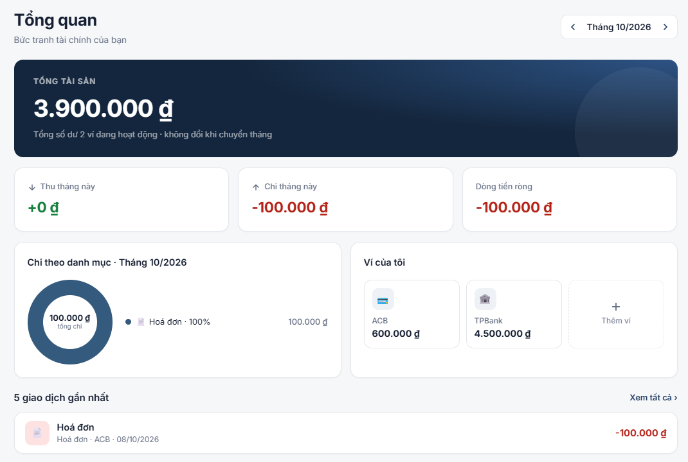

Personal finance web app · Solo project
Started from three problems a real user had with Excel and notes apps, worked through elicitation, gap analysis and use case specs, then shipped five phases on Vercel and Supabase.
- Elicitation
- 59 questions
- Capability gaps
- 7 (BABOK)
- Business rules
- 15
- Delivered
- 5 phases
Demo login: deutschhallob1b2@gmail.com / demo_hallo